Agenda de Citas
Visualiza la carga del taller en tiempo real y evita sobreagendamientos.
FOLLOW-MOTORS digitaliza la agenda, el seguimiento de servicios y el historial de mantenimiento de la agencia CFMOTO, optimizando la atención y eliminando el uso de papel.
Empresa líder a nivel internacional en el diseño, desarrollo y comercialización de motocicletas de alta cilindrada, vehículos todo terreno (ATV), utilitarios (UTV) y side-by-side (SSV).

SSC (Smart Service Control) es la plataforma integral diseñada para optimizar el agendamiento y monitoreo de mantenimientos de motocicletas en CFMOTO.
Sustituye por completo los procesos manuales por un entorno digital seguro, reduciendo tiempos de espera y centralizando el expediente técnico de cada vehículo.
Diseño moderno, limpio y con alto contraste para una gestión rápida dentro del taller.

Herramientas avanzadas para optimizar la productividad del equipo de asesores y mecánicos.
Visualiza la carga del taller en tiempo real y evita sobreagendamientos.
Vincula los datos personales del propietario directamente con el número de serie (VIN).
Control por fases: desde la recepción inicial hasta el control de calidad final.
Registro completo de repuestos, servicios pasados y observaciones técnicas.
Avisos automáticos sobre estatus de servicio y confirmaciones de citas.
Reducción del 40% en tiempos de gestión administrativa dentro del taller.
Alta de clientes y de cada unidad asociada a su historial técnico.
Programación y control eficiente de citas del taller.
Agenda con disponibilidad en tiempo real, reprogramación y recordatorios automáticos de citas para clientes y asesores.
Visibilidad del progreso: recibido, en proceso, listo para entrega.
Acceso rápido al historial completo de servicios de cualquier unidad.
Respuestas más rápidas y menos tiempo de espera en recepción.
Reducir tareas manuales repetitivas dentro de la agencia.
El cliente solicita o programa cita en la plataforma eligiendo horario disponible.
Se valida el registro de la moto, kilometraje y solicitud específica del usuario.
El mecánico actualiza el estatus del mantenimiento en tiempo real.
El cliente recibe la confirmación y el historial actualizado del servicio.